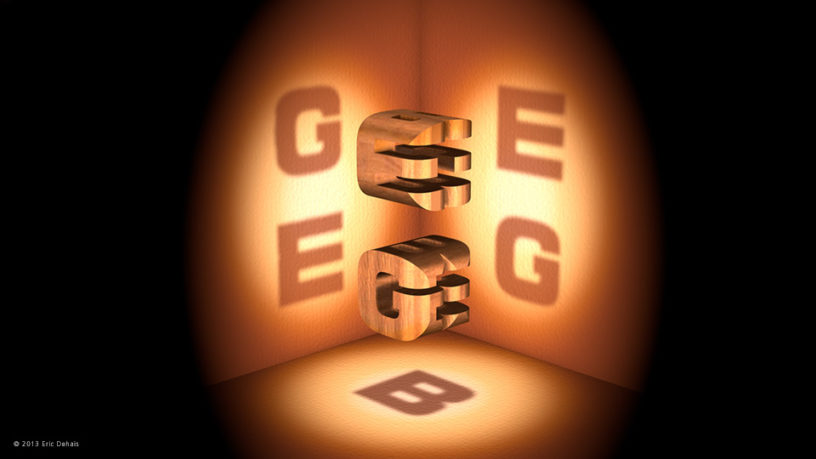
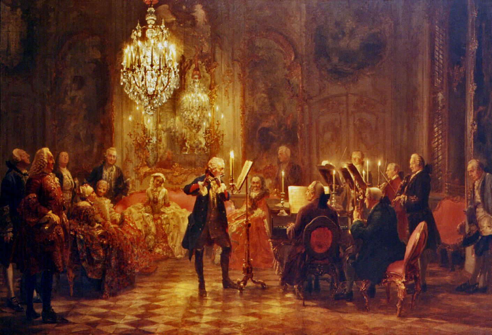
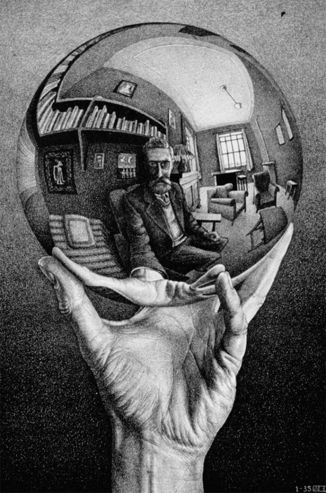
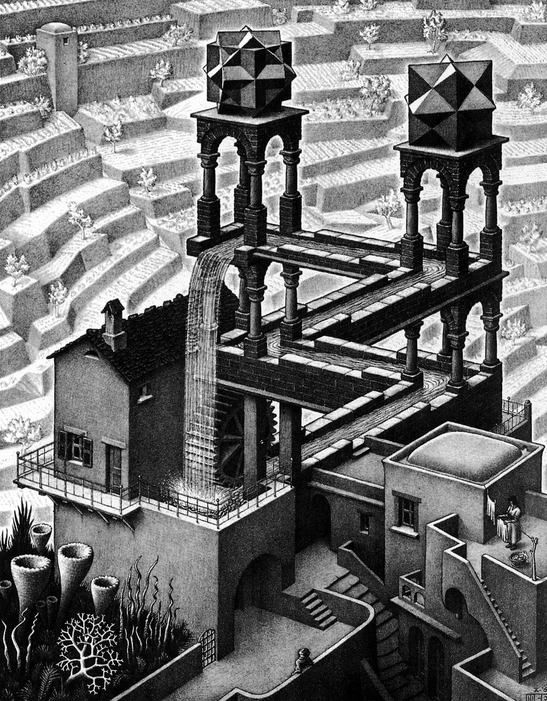
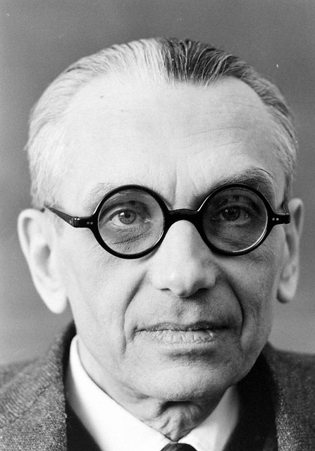
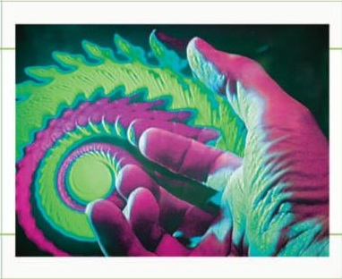
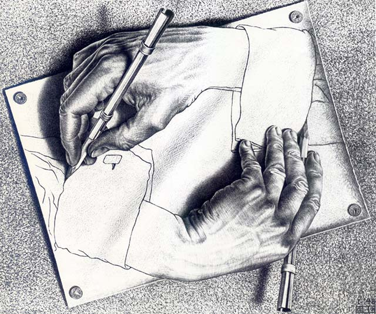

Gödel, Escher, Bach
Lucas Vieira
<lucasvieira@protonmail.com>
Apresentação

Figure 1: Arte da capa da segunda edição.
- Autor: Douglas Hofstadter
- Ano: 1979
- Ganhador do Prêmio Pulitzer
Estrutura da Obra
- Multidisciplinar: Lógica, Computação, Genética, Harmonia…
- Capítulos introdutórios de diálogos entre personagens recorrentes (Tortoise, Achilles, Crab, Anteater, Sloth)
- Capítulos subsequentes explorando aspectos teóricos
Personagens principais inspirados no conto What The Tortoise Said to Achilles, de Lewis Carroll (que foi inspirado no Paradoxo de Zenão de Eleia)
A tartaruga "tapeia" Aquiles para que ele entre em uma regressão infinita ao tentar provar um modus ponens
Outras histórias abordam aspectos e alegorias linguísticas ou conceituais
- Tartaruga, Aquiles, Sr. Caranguejo e Sr. Tamanduá tomando chá; Sr. Tamanduá explica como se comunica com formigueiros através dos símbolos produzidos pela organização das formigas
- Crab Canon brinca com o texto, fazendo com que o diálogo se inverta a partir da metade, mantendo a existência de sentido
J. S. Bach

Figure 2: Retrato de Bach por E. G. Haussmann.
(1685 - 1750)
The Musical Offering (Musikalisches Opfer, BWV 1079)

Figure 3: Concerto de Frederico, O Grande em Sansoucci.
J. S. Bach visita a Prússia; encontra Frederico, O Grande.
- Proposta de um tema pelo rei (Thema Regium);
- Bach cria, imediatamente, variações completas sobre o tema, incluindo uma fuga de três vozes (Ricercar a 3);
- Posteriormente, cria mais peças, incluindo uma fuga a seis vozes, e compila-as em formato de enigmas para o rei.
Fuga (Ricercar) é uma especialização de um canon.
Exemplo de canon: Frère Jacques
- Vozes bem-delimitadas, começam pelo tema e então realizam variações.
- Cada voz é sua própria melodia; as vozes unidas constituem uma melodia emergente.
- Recorrência do tema em vários níveis e formas indica auto-referência e autorreplicação.
M. C. Escher

Figure 4: Hand with Reflecting Globe. M. C. Escher, 1935.
(1898 - 1972)
Obras
Figure 5: Detalhe de Relativity. M. C. Escher, 1953.
- Realizações visuais dos chamados Strange Loops
- Ilustrações abordando paradoxos, ilusões, ambiguidade semântica
- Emergência, Auto-referência e Autorreplicação

Figure 6: Waterfall. M. C. Escher, 1961.
Kurt Gödel

Figure 7: Kurt Gödel.
(1906 - 1978)
Prelúdio: Isomorfismo
Seja o Sistema-pq a seguir.
V = \(\{ x, y, z \}\)
Σ = \(\{ -, p, q \}\)
- Def: Quando \(x\) é composto por hífens, \(xp-qx-\) é um axioma.
- Regra: Se \(x\), \(y\), \(z\) são compostos por hífens e \(xpyqz\) é um teorema, então \(xpy-qz-\) é um teorema.
…o que isto parece?
"…symbols of a formal system, though initially without meaning, cannot avoid taking on a 'meaning' of sorts, at least if an isomorphism is found"
O problema do Isomorfismo
\(2 + 1 + 1 = 4 \Rightarrow --p-p-q----\)
…mas \(--p-p-q----\) não é uma string bem-formada do Sistema-pq!
Prelúdio: Typographical Number Theory
Sistema criado por Hofstadter para ilustrar cálculo proposicional.
- Joining rule: \(x, y \Rightarrow \lt{}x \land y\gt\)
- Separation rule: \(\lt{}x \land y\gt \Rightarrow x, y\)
- Double-tilde rule: \(\sim\sim{}x \Rightarrow x\)
- Fantasy rule: \(x \overset{*}{\vdash} y \Rightarrow \lt{}x \supset y\gt\)
- Carry-over rule: \(x \Rightarrow [\, x \,]\)
- Rule of detachment: \(x, \lt{}x\supset{}y\gt \Rightarrow y\)
- Contrapositive rule: \(\lt{}x\supset{}y\gt \Leftrightarrow \lt\sim{}y\supset\sim{}x\gt\)
- De Morgan's rule: \(\lt\sim{}x\land\sim{}y\gt \Leftrightarrow \sim\lt{}x\lor{}y\gt\)
- Switcheroo rule: \(\lt{}x\lor{}y\gt \Leftrightarrow \lt\sim{}x\supset{}y\gt\)
- Quantificadores: \(\forall x:y\), \(\exists x:y\)
Isomorfismo numérico (de \(\mathbb{N}\) para TNT)
- \(0 \Rightarrow 0\)
- \(1 \Rightarrow S0\)
- \(2 \Rightarrow SS0\)
- \(3 \Rightarrow SSS0\)
- \(4 \Rightarrow SSSS0\)
etc.
Exemplo: postulados de Peano em TNT
- ∀ a:~Sa=0
- ∀ a:(a + 0)=a
- ∀ a:∀ a':(a+Sa')=S(a+a')
- ∀ a:(a ⋅ 0)=0
- ∀ a:∀ a':(a ⋅ Sa')=((a ⋅ a')+a)
Dado um vocabulário austero, podemos enumerar as letras…
…dada uma numeração para letras, podemos escrever proposições como números!
Numeração de Gödel
- \(\forall \rightarrow 1\)
- \(a \rightarrow 2\)
- \(: \,\rightarrow 3\)
- \(\sim \rightarrow 4\)
- \(S \rightarrow 5\)
- \(= \rightarrow 6\)
- \(0 \rightarrow 7\)
\(\forall a:\sim{}Sa=0 \Rightarrow (1, 2, 3, 4, 5, 2, 6, 7)\)
\(G(p) = 2^{1} + 3^{2} + 5^{3} + 7^{4} + 11^{5} + 13^{2} + 17^{6} + 19^{7}\)
\(G(p) = 918173065 \Rightarrow G(p) = SSSSSSSSS\dots{}SSS0\)
Numeração de Gödel equivale ao processo de quoting (paráfrase).
- Diamantina é a microrregião de MG com 7348 km2 de área e 80000+ habitantes.
- "Diamantina" é uma palavra de dez letras que designa Diamantina.
- "Diamantina" tem sentido, porque foi atribuído a Diamantina (isomorfismo).
- Números de Gödel têm sentido porque se atribuem a proposições válidas da lógica!
Seja \(T\) uma proposição do TNT, que deriva se outra proposição \(a\) é teorema do sistema ou não (um predicado).
\(T(G(a))\) é capaz de dizer, usando o número gödeliano \(G(a)\), se uma sequência de passos lógicos inscrita em \(a\) é derivável em TNT.
Esta prova equivale a provar uma propriedade numérica para \(G(a)\).
Como \(T\) é uma proposição de TNT, \(\exists G(T)\).
Sendo assim, qual a resposta para \(T(G(T))\)?
\(T\) é um teorema de TNT? \(T\) pode ser descrito usando lógica proposicional?
NÃO.
Consistência vs. Completude
Supondo que \(T\) possa existir em um sistema mais forte que a lógica, então a lógica seria incapaz de derivar todas as verdades; portanto, seria incompleta.
Supondo que \(T\) exista dentro da lógica, então a lógica permitiria \(T\) como uma antinomia (afirmação simultânea de proposições que se contradizem); portanto, seria inconsistente.
Por isso, \(T\) é indecidível.
Strange Loops, ou Hierarquias Entrelaçadas

Figure 8: Arte da capa de I am a Strange Loop.
Arthur Lee Samuel, autor do primeiro programa de aprendizagem de máquina: "Qualquer instanciamento mecânico de algo com um 'querer' requererá uma regressão infinita"
Tartaruga, no conto de Carroll: nenhum passo de um raciocínio, não importando sua simplicidade, pode ser feito sem invocar uma regra para justificar o passo em questão (como o é esta afirmação).
Raciocinar de forma totalmente justificada requer uma regressão infinita; logo, raciocinar é "impossível".
(Releitura do paradoxo de Zenão de Eleia?)
Este paradoxo não se aplica a humanos, porque não precisamos de regras para raciocinar.
Humanos são "sistemas informais".
Arthur Lee Samuel também diz que nenhum computador "quer" nada, porque foi programado por outra pessoa; o "querer" da máquina seria um "querer" repassado pelo programador.
A não ser que o computador pudesse se programar…
De onde vem o "querer"?
A não ser que leve-se em consideração o conceito de alma, o "querer" não é algo extra-corpóreo, mesmo quando sob influência.
"Querer" perpassa uma estrutura física – o corpo, que não foi feito sob o comando do seu "Eu".
Sob a existência do seu "Eu", uma entidade auto-organizável, com senso de desejos, vontades, e as mais diversas coisas, existe um substrato físico, inviolável, organizado por outrem.
Em última instância, Arthur Lee Samuel não consegue determinar a diferença entre máquinas e mentes…
O que, afinal, é um Strange Loop?
Strange Loop, ou Hierarquia Entrelaçada, é uma estrutura recursiva que opera sobre um nível "inviolável" para a mesma.

Figure 9: Drawing Hands. M. C. Escher, 1948.

Mentes, da perspectiva do Strange Loop
Um emaranhado neural, suportando um emaranhado simbólico.
…mas apenas o emaranhado simbólico é uma Hierarquia Entrelaçada.
Não há estranheza em eventos de feedback, mas Strange Loops aparecem quando há auto-organização ou antinomias na estrutura.
Algo dentro do sistema "pula para fora" e age sobre o sistema, como se estivesse fora dele.
Strange Loops Quintessenciais
As fugas e canons de J. S. Bach em Musikalisches Opfer.
Os desenhos de M. C. Escher.
A antinomia \(T(G(T))\) de Kurt Gödel.
…e por fim…
O símbolo Eu (I, self, me) na mente humana.
Considerações Finais
Uma hierarquia entrelaçada é, por definição, produto de auto-referência, sendo capaz de se auto-organizar e, portanto, "exige" mutabilidade.
Assim, é imprescindível que o strange loop exista em um nível capaz de permitir inconsistências, como antinomias.
Também é essencial que o nível inviolável seja consistente, uma vez que ele provê a estrutura básica para que o emaranhado simbólico passe a existir.
Strange Loops são aparentes sob uma perspectiva holística, e imperceptíveis sob uma perspectiva reducionista.
Um computador é, por definição, um sistema formal, e portanto incapaz de abrigar um strange loop diretamente, sem "quebrar".
Através de comportamento emergente, é possível que uma hierarquia entrelaçada seja produzida.
Direcionar um comportamento emergente é uma atividade difícil; por isso, só parece possível formalizar as regras-base de um strange loop.
Autômatos celulares aderem bem à ideia de comportamento emergente produzido segundo regras-base simples, e poderiam ser a porta de entrada para strange loops mais complexos.
Bibliografia
HOFSTADTER, D. R. Gödel, Escher, Bach: An eternal golden braid. Basic Books, 1979. 2ª ed. 756 p. ISBN: 978-0-465-02656-2.
NAGEL, E. NEWMAN, J. Gödel's proof. New York University Press, 2008. Revised edition. 160 p. ISBN: 978-0814758373.